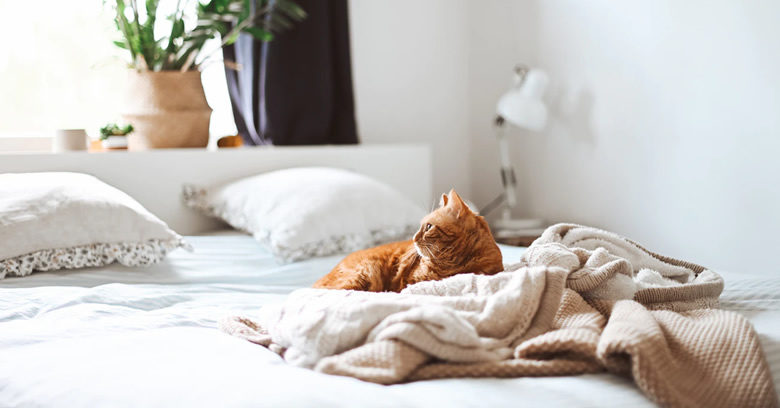

These Antibacterial Sheets Changed My Life: No More Sweating, Odors, Or “Bacne”

Are you tired of washing your sheets just for them to get smelly and dirty again? You need to keep reading because this product that my sister found has me waking up glowing! It’s time to say goodbye to sweaty sleepless nights!
My name is Hilary Monaghan, and let me start off by saying I have always struggled with sweating in my sleep. Waking up to sweat stained sheets that lingered with BO was normal for me. It always made me self conscious to have someone sleep over in the same bed as me.
No matter what I tried, I couldn't keep my sheets from staying clean for more than a day or so. I hated waking up feeling gross, unrested, and unmotivated to start my day. My self-esteem was suffering and even my skin was constantly breaking out. Luckily for me, that all changed a few months back...
It was Christmas 2019 and my family was staying at my sisters house for the holidays. I was dreading staying in one of her guest bedrooms because it's always a sauna in there. But, what happened that week changed my life forever!
These Sheets Are Self-Cleaning And Cooling
I woke up after the first night of sleeping there and I felt incredible. It felt like I took a sleeping pill that had no negative side effects. I don’t even remember falling asleep. I actually think that the second my head hit the pillow, I was out cold! I woke up feeling refreshed, energized, and mentally clear. The best part was that there were no sweat stains or bad odors! (1)
The bed was completely dry, my skin was oil-free, and I really didn’t need to shower. The sheets were actually really cool all night. It felt like there was a light breeze under the covers.

 Helps Fight Bacteria Growth (2)(3)
Helps Fight Bacteria Growth (2)(3)
 Temperature Regulating (4)
Temperature Regulating (4) - Luxurious Supima Cotton
- Helps Increase Glowing Skin (5)
 3x Less Laundry
3x Less Laundry  Prevents The Growth Of
Odor-Generating Bacteria (6)
Prevents The Growth Of
Odor-Generating Bacteria (6)  Self-Cleaning (7)
Self-Cleaning (7)  Saves Money
Saves Money
What’s The Big Secret?
That very first morning while I was drinking some coffee with my sister I mentioned to her how incredible my sleep was. I asked her what kind of bed she had because that had to be the reason why I slept so well. I was really shocked to find out that it wasn’t the bed at all, it was actually these sheets that she bought online from a brand called Miracle.
She sent me a link to Miracle and what I read was incredible. Their sheets are made with an advanced all-natural silver infused cotton fabric that fights 99% (8) of bacteria. It wasn’t just the luxurious soft cotton that made my sleep so amazing, it was the bacteria fighting and temperature regulating properties too.
I was literally sleeping on the cleanest sheets ever invented. No dust mites building up, and no gross bacteria. I was sleeping and breathing in pure cleanliness, and my body thanked me for that! Not to mention, I felt like I was staying in a 5-star resort because of the luxurious cotton fabric.
I was immediately thinking about how much better my life would be if I had these sheets at my house. My “bacne” would clear up along with the rest of my skin. (9) I could do 3x less laundry. I could finally wake up every morning feeling young, beautiful, and refreshed!
The more that I read into Miracle, the more I started to obsess over them!
People Are Raving About These Sheets...
See what all the hype is about:
"So far, I am very happy with the Miracle sheets! It's true, they don't smell, and it's true, I don't have bed smell. I have long believed in silver for combating bacteria, and think the sheets are a perfect idea. They are cool to sleep on and feel soft and "silky". I'm very pleased I purchased the Sateen Luxe sheets." - Isa A. Denver, CO
"LOVE! Best sheets ever. So luxurious. So soft. I was skeptical but they do what they say. 1 month in and still no odors." - Andrea M. Wake Forest, NC
"I can’t get over these sheets. My morning stuffiness and allergy is gone." - David G. New York, NY
"Love my new miracle sheets. They do not slip off like my old sheets did. They are comfy and help keep you cool all night." - Shari B. Derby, NC
"My back and shoulder acne has gotten significantly better since using these sheets." - Matthew P. Phoenix, AZ
Luxury Hotels And Up-Scale Airbnb’s Have Already Switched
The secret is starting to get out about Miracle sheets. Some of the most luxurious hotel chains and Airbnb’s are making the switch to silver infused bedding. It helps keep the rooms cleaner, and odor free. Some Airbnb’s have even reported more 5-star reviews from customers having a better night sleep since switching to Miracle.
Our Final Thoughts!
The rest of the week that I stayed at my sisters over the Christmas Holiday was just pure perfection. Every night I fell asleep the second my head hit the pillow, and every morning was just as refreshing as the last. I was completely hooked on these luxury silver-infused sheets. In fact, the rest of my family who stayed at my sisters house was also obsessed with these sheets!
Before I got home I even ordered some for each bedroom in my house, lol!
I actually noticed that my skin completely cleared up by the last day.(10) I never woke up looking so young and refreshed in my entire adult life.
Miracle offers a 30 Day Money Back Guarantee, no questions asked whatsoever! I couldn’t imagine anyone wanting to return them unless they bought the wrong size.
Update: I really can’t explain how much these sheets have changed my life. They look amazing, feel amazing, and have made sleep something that I look forward to again. It’s amazing to wake up feeling fresh and clean. I love getting into bed at night and settling into my cool, clean, and fresh sheets.
* Due to the world's growing need for bacteria fighting products, these sheets keep selling out.
We highly recommend reserving some now before they go on back order.
NOTE: You might never want to get out of bed anymore, so set an alarm when using Miracle sheets!
Last I checked they had an awesome sale going on, so make sure to check it out and see if it’s still available. I highly recommend taking advantage of the deal and get sheets for each bed in your house, because trust me, you will come back and buy more!

Exclusive Discounts Starting at 20% OFF!
This limited time deal is in high demand and stock keeps selling out.
 CHECK AVAILABILITY
CHECK AVAILABILITY
This special offer is valid until